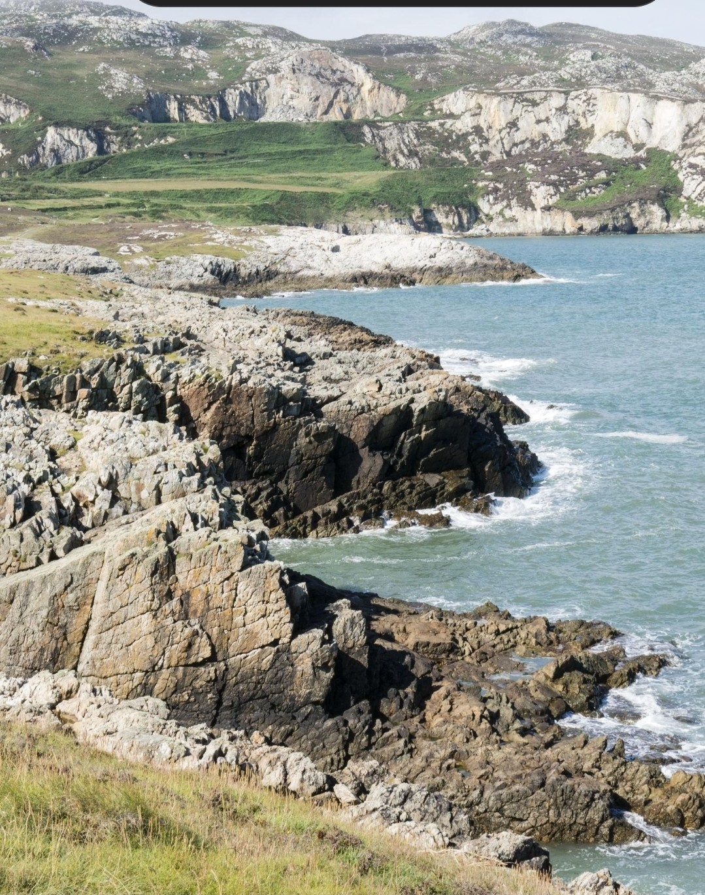
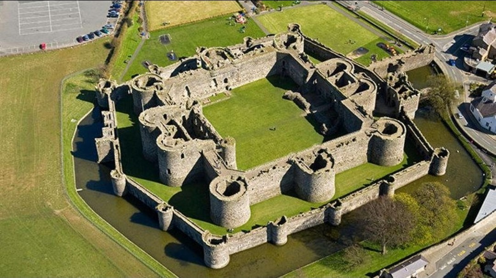
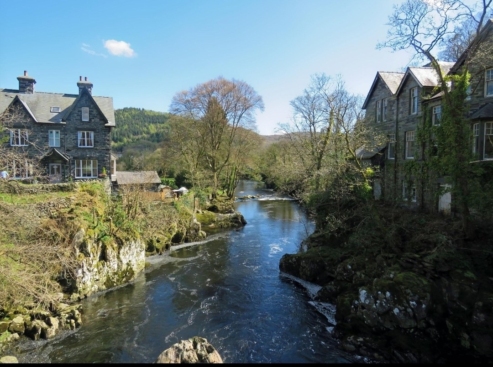
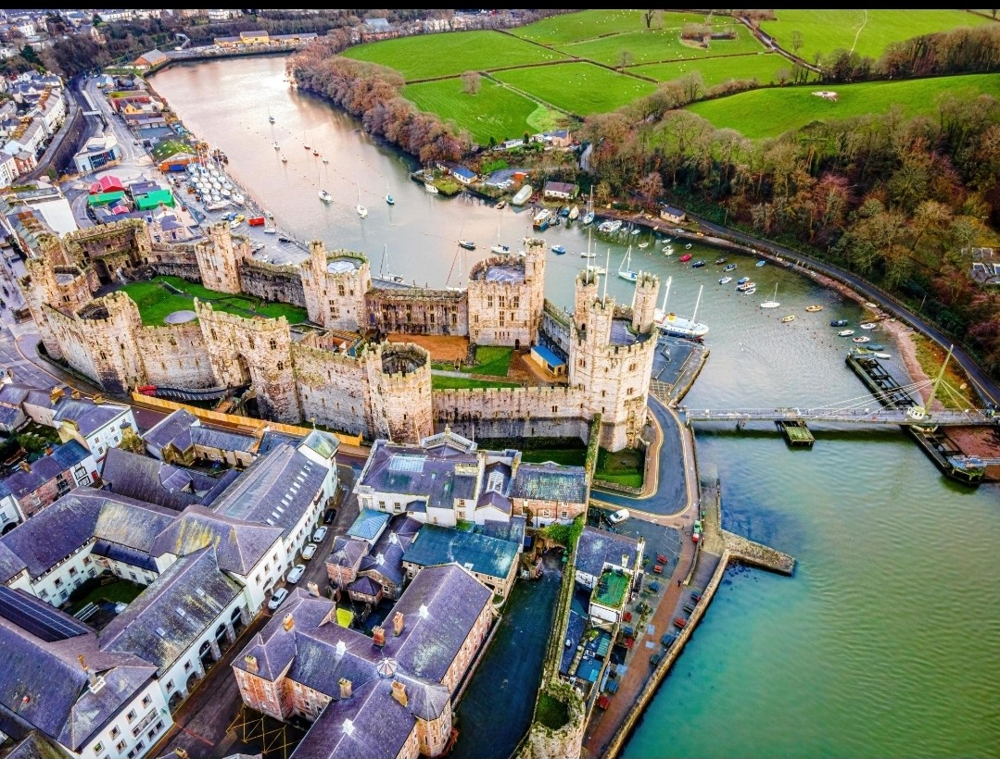
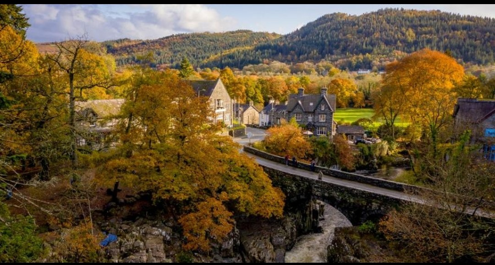

North Wales has many beautiful places to explore, from mountains and beaches to historic towns and castles.

Anglesey is a beautiful island in North Wales, known for its stunning coastline, beaches, countryside and historic attractions.

Beaumaris is a historic seaside town on Anglesey, famous for its castle, attractive waterfront and views across the Menai Strait.

Betws-y-Coed is a picturesque village surrounded by forests, rivers and waterfalls, making it popular with outdoor visitors.

Caernarfon is a historic town in North Wales, well known for its impressive castle, waterfront and rich Welsh heritage.

Snowdonia, also known as Eryri, is famous for its mountains, lakes and walking trails and is a popular destination for outdoor adventures.
Watch this video to discover the beauty of North Wales.
Watch 21 Top Places to visit in North Wales on youtube